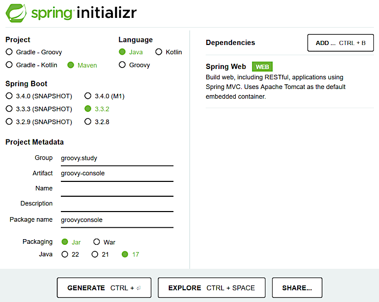
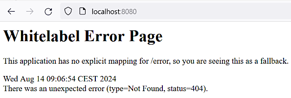

HomeIndex
HomeIndex GitHub
</>
GitHub
</>
Groovy console
In this section we are going to implement Groovy console that allows:
Go to Spring Initializr site and define the following configuration:

Alternatively the following link may be used: https://start.spring.io/#!type=maven-project&language=java&platformVersion=3.3.2&packaging=jar&jvmVersion=17&groupId=groovy.study&artifactId=groovy-console&name=&description=&packageName=groovyconsole&dependencies=web
Delete some unnecessary files (like mvnw and mvnw.cmd), do some other code cleaning and
reformatting.
The generated artifact is going to be a JAR file with dependencies. It is massive enough, so we
are going to bring the target location out of the working project directory. To do that, the
build/directory element is added into the pom.xml. The environment variable
TMP_MAVEN_BUILDS_DIR must be defined in the system.
Building (as Java 17 is not set by default we need to set the corresponding environment variables):
>set JAVA_HOME=%JAVA_17_HOME%
>set PATH=%JAVA_17_HOME%\bin;%PATH%
>mvn clean package
...
[INFO] --------------------< groovy.study:groovy-console >---------------------
[INFO] Building groovy-console 0.0.1-SNAPSHOT
[INFO] from pom.xml
[INFO] --------------------------------[ jar ]---------------------------------
...
[INFO] -------------------------------------------------------
[INFO] T E S T S
[INFO] -------------------------------------------------------
...
[INFO] Results:
[INFO]
[INFO] Tests run: 1, Failures: 0, Errors: 0, Skipped: 0
...
[INFO] ------------------------------------------------------------------------
[INFO] BUILD SUCCESS
[INFO] ------------------------------------------------------------------------
[INFO] Total time: 7.698 s
[INFO] Finished at: 2024-08-14T09:04:21+02:00
[INFO] ------------------------------------------------------------------------Running:
>cd /d %TMP_MAVEN_BUILDS_DIR%\groovy-console\
>set PATH=%JAVA_17_HOME%\bin;%PATH%
>java -jar groovy-console-0.0.1-SNAPSHOT.jar
. ____ _ __ _ _
/\\ / ___'_ __ _ _(_)_ __ __ _ \ \ \ \
( ( )\___ | '_ | '_| | '_ \/ _` | \ \ \ \
\\/ ___)| |_)| | | | | || (_| | ) ) ) )
' |____| .__|_| |_|_| |_\__, | / / / /
=========|_|==============|___/=/_/_/_/
:: Spring Boot :: (v3.3.2)
...
... : Tomcat started on port 8080 (http) with context path '/'
... : Started Application in 1.584 seconds (process running for 1.913)To stop press Ctrl+C (but not now please).
Alternatively the project may be run in an IDE by executing the class Application.java.
Testing the result in a browser: http://localhost:8080/. The result must look like this:

The following commit represents the newly automatically generated project with the above cleanup and customization:
Git commit:
66bfc6ce328ff55b7af8ccacf3d6a8a4f71848c9Groovy console Spring Boot project initialized
Dependency tree report:
>mvn dependency:tree > dependency_tree.txtThe result is in the file dependency_tree.txt.
Git commit:
5023a8176c11a98a7d4aecfe8c726aaa121c1269dependency tree added